Projeto: Space Shooter
Resumo: Configuração do início da partida, condições de derrota e sistema de pontuação.
Preparando os Assets do Jogo
Antes de programar, precisamos trazer os elementos visuais para dentro do Scratch.
- Crie o Ator do Jogador: Passe o mouse no ícone de gato (canto inferior direito) e selecione "Enviar Ator". Escolha a imagem da sua nave.
- Importe os Inimigos: Repita o processo para os arquivos de Meteors e Enemy. Lembre-se de renomeá-los exatamente assim para a lógica funcionar!
- Ajuste o Tamanho: Selecione cada ator e, no campo Tamanho (abaixo da tela de jogo), mude de 100 para um valor menor (ex: 40 ou 50) para que eles caibam no cenário.
- Centro do Ator: Vá na aba Fantasias, selecione o desenho e garanta que o centro da imagem esteja alinhado com o alvo azul no meio da tela de desenho.
- Cenário (Palco): Clique em "Selecionar Cenário" no canto inferior direito e escolha "Stars" ou "Galaxy" na biblioteca do Scratch para dar o clima espacial.
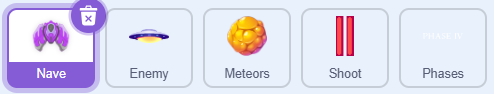
Variáveis: O Cérebro do Jogo
As variáveis são caixinhas onde o computador guarda informações que mudam o tempo todo, como pontos e velocidade.
Passo a Passo: Criando Variáveis
- Clique na categoria Variáveis (Bolinha Laranja Escuro).
- Clique no botão "Criar uma Variável".
- Nomeie exatamente como: Score, speed_meteors e Spawn_time_meteors.
- Regra de Ouro: Selecione sempre "Para todos os atores". Isso permite que um ator "converse" com o outro.
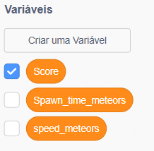
Por que essas variáveis são importantes?
1. Score (Pontuação)
É o sistema de recompensa. Ela controla a progressão: quando o Score atinge um valor, o jogo "decide" mudar de fase.
2. speed_meteors
Define a velocidade. Em vez de criar vários atores, apenas mudamos o valor da variável para 3, 6 ou 9. Todos os meteoros aceleram juntos!
3. spawn_time_meteors
Controla o caos. Quanto menor o número (ex: 0.5s), mais rápido os clones são criados, transformando o jogo em uma chuva de meteoros.
O Segredo da "Caixinha Azul"
Ao lado do nome da variável no menu, existe um quadrado para marcar:
[✔] Score: Aparece no palco para o jogador acompanhar seus pontos.
[ ] speed_meteors: Fica oculto. É um cálculo de "bastidor" que o jogador não precisa ver.
💡 Dica Profia: Se o seu jogo não mudar de fase, verifique se você não criou a variável como "Apenas para este ator". Se isso acontecer, os outros atores não conseguirão ler os pontos do Score!
Programando a Nave
Inicialização
Define o estado inicial assim que o jogo começa.
START SCRIPT
Quando bandeira verde for clicada
➜ vá para x: 0 y: -140
➜ mude [Score] para 0
Sistema de Game Over
Monitora colisões para encerrar a partida.
COLLISION CHECK
Quando bandeira verde for clicada
espere até que
(tocando em Meteors?)
ou (tocando em Enemy?)
➜ pare [todos]
Dica do game-over
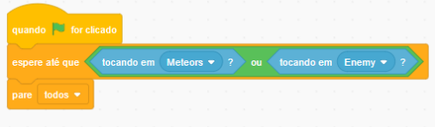
Movimentação do Jogador
Este é o bloco principal de controle, permitindo que o jogador mova o personagem usando o teclado.
CONTROLE DE MOVIMENTO
Quando bandeira verde for clicada
Sempre
se tecla W pressionada? então
➜ adicione 10 a y
se tecla S pressionada? então
➜ adicione -10 a y
se tecla A pressionada? então
➜ adicione -10 a x
se tecla D pressionada? então
➜ adicione 10 a x
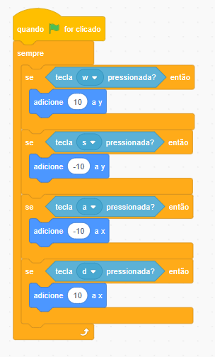
💡 Dica de Gameplay: Como são blocos "se" independentes, o jogador pode mover-se na diagonal pressionando duas teclas ao mesmo tempo (ex: W + D).
Progressão de Fases
Este script gerencia a dificuldade ou os níveis do jogo com base na pontuação alcançada.
Gatilhos de Nível
Usamos "Espere até" (Wait until) em sequência. O código "trava" em cada linha até a pontuação ser atingida, liberando a próxima fase.
GERENCIADOR DE DIFICULDADE
Quando bandeira verde for clicada
Espere até que Score > 24
➜ Transmita "Phase2"
Espere até que Score > 49
➜ Transmita "Phase3"
Espere até que Score > 74
➜ Transmita "Phase4"
Espere até que Score > 299
➜ Transmita "Phase5"
Nota: Essas mensagens (transmissões) geralmente ativam outros scripts no jogo, como fazer os inimigos ficarem mais rápidos ou mudar o cenário.

Blocos Personalizados
O que são blocos cor-de-rosa?
São funções que criamos para organizar o código. Em vez de repetir vários blocos, nós "chamamos" o nome da função.
Programação do Inimigo (Nave)
defina move
sempre
➜ repita (aleatório 1 a 10)
➜ adicione 5 a x
➜ repita (aleatório 1 a 10)
➜ adicione -5 a x
defina explosion
➜ mude fantasia para Enemy_exp_spr1
➜ repita 4 vezes
➜ próxima fantasia
➜ espere 0.1 seg
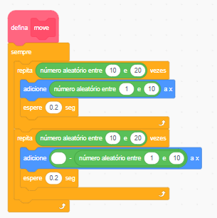
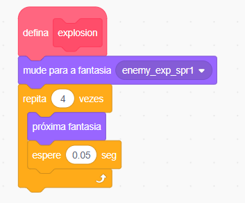
💡 Dica Profia: O bloco pare outros scripts no ator é essencial! Ele garante que o inimigo pare de atirar e de se mover enquanto a animação de explosão acontece.
Gerenciamento de Clones (Spawning)
LOGICA DO ATOR ORIGINAL
Quando bandeira verde for clicada
➜ esconda
Quando eu receber [Phase4]
sempre
➜ crie clone de [este ator]
➜ espere 6 segundos
Comportamento do Clone
A. MOVIMENTO E TIRO
Quando eu começar como um clone
➜ mostre
➜ sort_entry
➜ move
sempre
➜ espere 0.5 seg
➜ shoot
B. DANO E MORTE
Quando eu começar como um clone
espere até que tocando em "Shoot"?
➜ pare [outros scripts no ator]
➜ explosion
➜ apague este clone
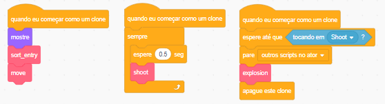
Programação dos Meteoros
Sistema de Dificuldade (Variáveis Globais)
Balanceamento de Jogo
As variáveis speed_meteors e Spawn_time_meteors controlam o ritmo do jogo. Note que na Fase 4 a dificuldade dos meteoros cai para compensar a chegada do Chefe!
CONTROLE DE FASES
Quando bandeira verde clicada ➜ Speed: 3 | Spawn: 1s
Quando receber [Phase2] ➜ Speed: 6 | Spawn: 0.8s
Quando receber [Phase3] ➜ Speed: 9 | Spawn: 0.5s
Quando receber [Phase4] ➜ Speed: 3 | Spawn: 1s (Foco no Chefe)
Gerador (Spawner)
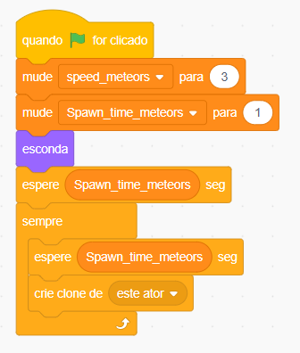
Movimento "Zigue-Zague"
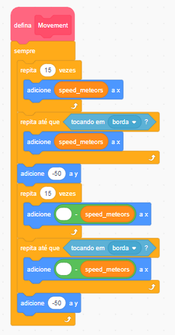
Colisão e Destruição
O meteoro possui uma variedade visual e recompensa o jogador com pontos ao ser destruído.
VIDA DO CLONE
Quando eu começar como um clone
➜ mude fantasia para (aleatório entre 1 e 2)
➜ mostre
➜ Movement
Se tocando em "Shoot"? então
➜ pare outros scripts no ator
➜ Explosion
➜ adicione 5 a Score
➜ apague este clone
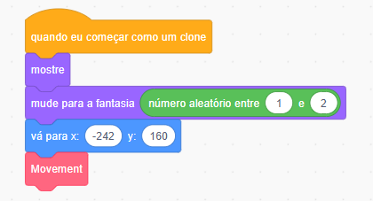
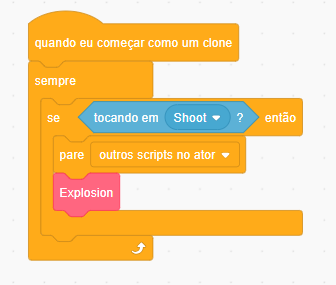
Diferença Estratégica: Ao contrário do Chefe que é imprevisível, os meteoros seguem um padrão fixo de "escada". Use isso para antecipar onde eles estarão!
Mecânica de Combate: O Laser
Resumo: Controle de disparo semi-automático, posicionamento dinâmico e limpeza de memória.
1. Mecânica de Disparo
Tiro por Clique
O uso do bloco "Espere até que NÃO tecla pressionada" impede que o jogador atire infinitamente apenas segurando o botão. Isso adiciona desafio ao jogo!
GATILHO DE TIRO
Quando bandeira verde clicada
➜
esconda
➜
sempre
espere até que tecla espaço pressionada?
➜ crie clone de [mim]
espere até que NÃO tecla espaço pressionada?
2. Vida do Projétil
MOVIMENTO DO CLONE
Quando eu começar como um clone
➜ vá para [Nave]
➜ mostre
➜ sempre
➜ adicione 10 a y
Dica de Ouro: O bloco vá para Nave deve vir antes do mostre para evitar que o tiro "pisque" no lugar errado antes de sair da nave.
3. Colisões e Limpeza de Clones
Para manter o jogo leve e sem erros, precisamos apagar os clones que não são mais necessários.
ACERTOU O INIMIGO
Se tocando em "Meteors"? então
➜ espere 0.1 seg
➜ apague este clone
*O atraso de 0.1s permite que o Meteoro detecte o impacto antes do tiro sumir.
SAIU DA TELA
Se tocando em "borda"? então
➜ apague este clone
🚀 Desafio: Upgrade Metralhadora
Substitua o bloco "espere até que NÃO" por um simples "espere 0.2 seg". O que acontece com a velocidade dos disparos?
Interface e Transições de Fase
Resumo: Gerenciamento de avisos visuais e feedback para o jogador sobre a progressão do nível.
1. Início do Jogo (Aviso de Fase 1)
O Sprite de Interface
Este ator não participa do combate. Ele serve apenas como um "anunciante" que entra em cena, dá o aviso e se retira.
APRESENTAÇÃO INICIAL
Quando bandeira verde clicada
➜ mude fantasia para "Phase_spr1"
➜ mostre
➜ espere 1 seg
➜ vá para x: 0 y: 0
➜ espere 1 seg
➜ esconda
2. Transições de Fase (Eventos)
Estes blocos ficam "ouvindo" o jogo e aparecem assim que a pontuação necessária é atingida.
FASE 2 E 3
Quando receber [Phase2] ou [Phase3]
➜ mude fantasia para correspondente
➜ mostre
➜ espere 2 seg
➜ esconda
FASE 4 E 5
Quando receber [Phase4] ou [Phase5]
➜ mude fantasia para correspondente
➜ mostre
➜ espere 2 seg
➜ esconda
🔄 O Ciclo de Lógica do Space Shooter
- Nave: Destrói inimigos → Ganha pontos → Transmite "Mudei de Fase".
- Placas: Recebem a mensagem → Mostram o aviso na tela.
- Inimigos/Meteoros: Recebem a mensagem → Aumentam a velocidade.
- Chefe: Recebe "Phase 4" → Inicia o combate final.
🏁 Projeto Concluído!
Com este sistema de mensagens (Broadcasting), todas as partes do seu jogo agora "conversam" entre si.
Diário de Bordo
Anote aqui as dificuldades encontradas na lógica dos blocos.
Anotações:
Nota
/ 10
Profia Coin
/ 10